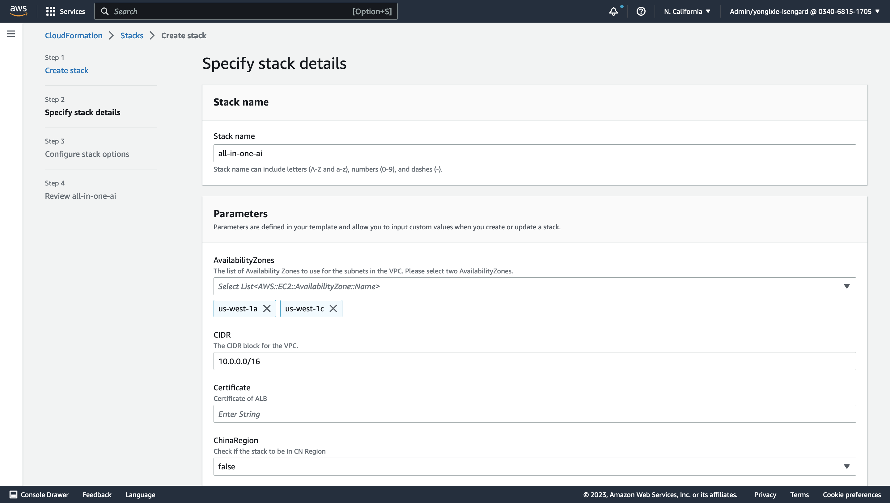
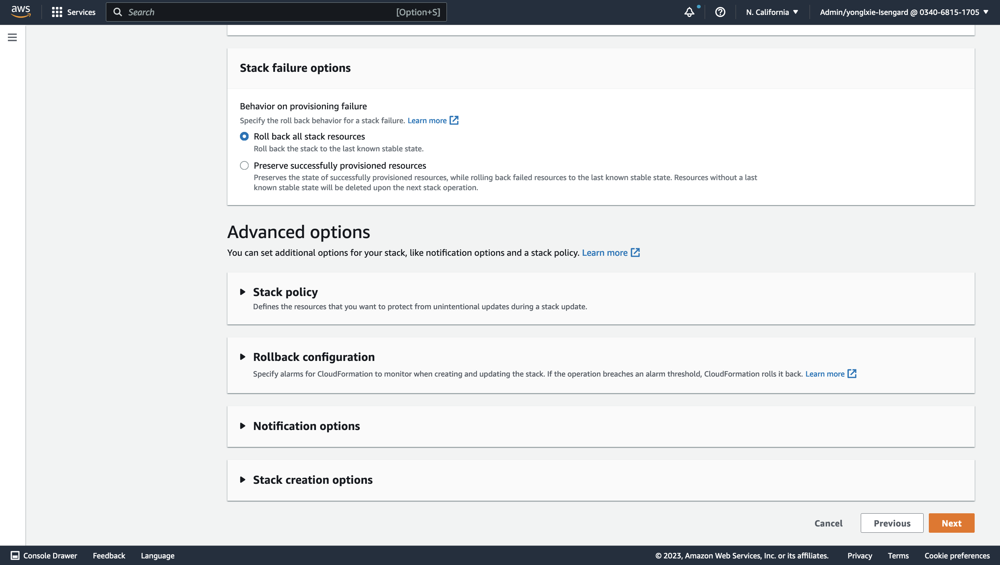

Deployment Guide
Prerequisites
Resources to be created prior to deployment.
Make sure the following resouces existed. In case they are not existed, please create them manually prior to deployment.
- Service-linked role
- AmazonOpenSearchServiceRolePolicy
Resources to be deleted prior to deployment.
Make sure the following resources not existed. In case they are existed, please delete them manually prior to deployment.
- DynamoDB tables
- all-in-one-ai-industrial-model
- all-in-one-ai-training-job
- all-in-one-ai-model
- all-in-one-ai-endpoint
- all-in-one-ai-transform-job
- all-in-one-ai-pipeline
- all-in-one-ai-api
- Lambda functions
- all_in_one_ai_annotation
- all_in_one_ai_api
- all_in_one_ai_create_api
- all_in_one_ai_create_deploy_huggingface
- all_in_one_ai_create_deploy_mxnet
- all_in_one_ai_create_deploy_pytorch
- all_in_one_ai_create_endpoint
- all_in_one_ai_create_model
- all_in_one_ai_create_pipeline
- all_in_one_ai_create_pipeline_helper
- all_in_one_ai_create_train_huggingface
- all_in_one_ai_create_train_mxnet
- all_in_one_ai_create_training_job
- all_in_one_ai_create_transform_job
- all_in_one_ai_delete_endpoint
- all_in_one_ai_delete_model
- all_in_one_ai_deploy
- all_in_one_ai_describe_endpoint
- all_in_one_ai_describe_pipeline_execution
- all_in_one_ai_describe_training_job
- all_in_one_ai_describe_transform_job
- all_in_one_ai_endpoint
- all_in_one_ai_finalize_pipeline
- all_in_one_ai_function
- all_in_one_ai_greengrass_component_version
- all_in_one_ai_coredevices
- all_in_one_ai_greengrass_create_component_version
- all_in_one_ai_greengrass_create_deployment
- all_in_one_ai_greengrass_deployment
- all_in_one_ai_greengrass_thing_groups
- all_in_one_ai_import_opensearch
- all_in_one_ai_import_opensearch_handler
- all_in_one_ai_import_opensearch_helper
- all_in_one_ai_industrial_model
- all_in_one_ai_inference
- all_in_one_ai_invoke_endpoint
- all_in_one_ai_list_endpoints
- all_in_one_ai_list_models
- all_in_one_ai_list_training_jobs
- all_in_one_ai_list_transform_jobs
- all_in_one_ai_model
- all_in_one_ai_model_package
- all_in_one_ai_model_package_group
- all_in_one_ai_pipeline
- all_in_one_ai_s3
- all_in_one_ai_search_by_image
- all_in_one_ai_stop_training_job
- all_in_one_ai_stop_transform_job
- all_in_one_ai_train
- all_in_one_ai_training_job
- all_in_one_ai_transform_job
- all_in_one_ai_transform_job_review
- OpenSearch Domain
- all-in-one-ai
- Simple Queue Service
- all-in-one-ai
- System Store Parameters
- parameters starting with /all_in_one_ai/*
- VPCs
- all-in-one-ai
Resources to be prepared prior to deployment
- S3 bucket - in the same region as the stack to be launched.
- Domain Name of web portal (Optional) - Needed only when connections protocol to web portal is HTTPS.
- ACM SSL certificate of web portal (Optional) - Needed only when connections protocol to web portal is HTTPS
Toolkits to be prepared prior to deployment
- git
- awscli
- zip
- python3
- pip3
- docker
Service quotas and limits
- Amazon VPC – 1
- Amazon VPC subnet – 4
- Amazon VPC Internet Gateway - 1
- Amazon VPC NAT gateway – 2
- Amazon VPC EIP – 2
- Amazon VPC endpoint – 5
- Amazon VPC route table - 3
- Amazon VPC Security group - 10
- Amazon VPC interface endpoint - 5
- Amazon IAM roles - 60
- Amazon SSM - 40
- Amazon Cognito user pool - 1
- Amazon DynamoDB table - 10
- Amazon EFS – 1
- Amazon EFS access point - 1
- Amazon Lambda - 60
- Amazon Rest API Gateway - 1
- Amazon OpenSearch domain - 1
- Amazon SQS queue - 1
- Amazon ECS service – 1
- Amazon ECS task - 1
- Amazon ECR private repository – 1
- Amazon S3 bucket – 1
- Amazon ACM public certificate - 1
Quick Deployment
Get source code
Contact your corresponding Amazon AWS Account BD/SA or email to yonglxie@amazon.com to get the source code.
Build and deploy
Run the following commands to package python codes and build docker image for web portal and then upload assets to S3 and push docker image to ECR which region is the same AWS region as where CloudFormation stack. It will may take 30-60 minutes.
./build_and_deploy.sh [s3uri] [aws-region]
Various deployment options
-
Option 1 – web portal with HTTP access
- It will be applicable only when you want to quickly experience this solution. You can leave Certificate field as blank in All-In-One AI main stack parameters to indicate it is option 1 – HTTP access only.
- Cautions: It is not recommended since there is no HTTPS encryption during network communication and there is no user authentication mechanism.
-
Option 2 – web portal with HTTPS access
- It will be applicable only when you want use your own user authentication mechanism. You can leave CognitoRegion field as blank in All-In-One AI main stack parameters to indicate it is option 2 – HTTPS access only.
- Cautions: you need to integrate your own user authentication mechanism into this solution guidance. You can refer to the Cognito integration.
-
Option 3 – web portal with HTTPS access + Cognito.
- You need to provide CognitoRegion, UserPool, UserPoolClient, UserPoolDomain in All-In-One AI main stack parameters to indicate it is option 3 – HTTPS access + Cognito.
- It is recommended since there is HTTPs encryption during network communication and user authentication enabled.
Cognito user pool and user authentication
The quick deployment process contains 2 steps: Cognito deployment (Optional) and All-In-One AI deployment via CloudFormation where these 2 CloudFormation stacks could be launched in different region. Cognito is optional used to authenticate with Cognito for All-In-One AI web portal.
If Cognito authentication is enabled, Cognito deployment should be done prior to All-In-One AI deployment with parameters – ClientName, Domain, DomainName, Email, and Username. After Cognito CloudFormation stack is launched, outputs – UserPool, UserPoolClient, UserPoolDomain can be found at the Outputs of Cognito stack. Those outputs variable will be used as the input parameter of All-In-One AI. After All-In-One AI CloudFormation stack is launched, when accessing All-In-One AI web portal, there is a first-time redirection to Cognito Login page to authenticate with Cognito if the Cognito session is not existed yet.
If Cognito authentication is disabled, please launch All-in-One AI CloudFormation Stack directly and leave parameters – CognitoRegion, UserPool, UserPoolClient, UserPoolDomain blank. When accessing All-In-One AI web portal, there is no first-time redirection to Cognito Login page.
Cognito deployment (Optional)
-
Launch CloudFormation stack template by clicking
 , and input Amazon S3 URL with HTTP URI of all-in-one-ai-cognito.yaml.
, and input Amazon S3 URL with HTTP URI of all-in-one-ai-cognito.yaml.
-
Specify stack details. Please input DomainName, Email information of your stack template, and customize other parameters if needed. Choose Next
-
Configure stack options. Keep everything as default and choose Next.
-
Review stack all-in-one-ai. Check the 2 check boxes in the bottom. Choose Create Stack.
-
Wait for around 5 minutes to get the stack launched.

-
Check the Stack Outputs.

All-In-One AI deployment
-
Launch CloudFormation stack template by clicking
, and input Amazon S3 URL with HTTP URI of all-in-one-ai-main.yaml. -
Specify stack details. Please select at least 2 availability zone, Certificate, DomainName, input S3 bucket/key information of your stack template, input CognitoRegion, UserPool, UserPoolClient, UserPoolDomain if Cognito authentication is enabled and customize other parameters if needed. Choose Next.
-
Configure stack options. Keep everything as default.


-
Review stack all-in-one-ai. Check the 2 check boxes in the bottom. Choose Create Stack.


-
Wait for around 30-60 minutes to get the stack launched.

-
Check the WebPortalURL, WebPortalDNS in the Stack Outputs and bind the WebPortalDNS to DomainName
-
Open the Web Portal URL in the Stack Outputs. If Cognito authentication is enabled, Cognito Login window will be prompt to input Username/Password. If Cognito authentication successes, the web portal of All-In-One AI will be shown. If Cognito authentication is disabled, the web portal of All-In-One AI will be shown directly.
Build stable-diffusion-webui
Build and push to ECR
Go to sagemaker/stable-diffusion-webui and
run ./build_and_push.sh [region-name]
Note: It is a partial step of build_and_deploy.sh
stable-diffusion-webui deployment
-
Launch CloudFormation stack template by clicking
, and input Amazon S3 URL with HTTP URI of all-in-one-ai-cognito.yaml.
-
Specify stack details. Please input API Gateway endpoint and select your private subnets, public subnets, vpc, and customize other parameters if needed. If you want to use HTTP, please leave the rest as blank. If you want to use HTTPS, please input ACM certifacate ARN and your domain name.Choose Next. For API Gateway endpoint, you can check it from the stack outputs of all-in-one-lambda.yaml.


-
Configure stack options. Keep everything as default and choose Next.


-
Review stack all-in-one-ai. Check the 1 check boxes in the bottom. Choose Create Stack.


-
Wait for around 10 minutes to get the stack launched and check the stack outpus.

Prepare SD models
-
SD v2.0
-
SD v1.5
-
SD v1.4
You could pick up all your interested SD models and download them into one directory and then run
python3 prepare.py [path-to-sd-models-directory]
This script will help to generate model.tar.gz and push s3://[sagemaker-default-bucket]/assets/, push the whole model directory to s3://[sagemaker-default-bucket]/models/, and generate meta-data and save in DynamoDB.
For instance, the following diagram shows the contents at the model files at s3://[sagemaker-default-bucket]/models/.

Note:
-
For SD v2.0, please keep the filename consistent, e.g. 768-v-ema.ckpt and 768-v-ema.yaml.
-
Only English versions of SD 2.x and SD 1.x are supported. Chinese versions (e.g. Taiyi) are not supported yet.
Launch stable-diffusion-webui
- Wait 10 minutes until the stable-diffusion-webui server pass the health check and then check the stack outputs of all-in-one-ai-webui and then launch the stable-diffusion-webui.

Resource Cleanup
-
The resource created by CloudFormation will be deleted automatically when you delete CloudFormation stack. Before you delete CloudFormation stack, please make sure the following resources created dynamically are deleted.
-
Go to AWS SageMaker Console, make sure all of model, endpoint config, and endpoint which were dynamically created are deleted.
CloudFormation Stack Parameters Reference
| Name | Description | Type | Default |
|---|---|---|---|
| S3Bucket | S3 bucket of assets | String | |
| S3Key | S3 key of assets | String | |
| CustomIdentifier | AWS Resource Custom Identifier | String | all-in-one-ai |
| AvailabilityZones | The list of Availability Zones to use for the subnets in the VPC. Please select two AvailabilityZones. | List | |
| DomainName | Domain Name of Web Portal | String | |
| Certificate | Certificate of Domain Name | String | |
| CognitoRegion | Cognito Region | String | |
| CIDR | CIDR block for VPC | string | 10.0.0.0/16 |
| PublicSubnet1CIDR | CIDR block for the public subnet in Availability Zone A | String | 10.0.0.0/24 |
| PublicSubnet2CIDR | CIDR block for the public subnet in Availability Zone B | String | 10.0.1.0/24 |
| PrivateSubnet1CIDR | CIDR block for the private subnet in Availability Zone A | String | 10.0.2.0/24 |
| PrivateSubnet2CIDR | CIDR block for the private subnet in Availability Zone B | String | 10.0.3.0/24 |
| EfsEncrpytedBoolean | Create an encrypted Amazon EFS file system. | String | True |
| EfsGrowth | Amount of dummy data (GiB) to add to the file system (max 6144 GiB) | Number | 0 |
| EfsPerformanceMode | Select the performance mode of the file system. | String | generalPurpose |
| OpenSearchDomainName | OpenSearch Domain | String | all-in-one-ai |
| OpenSearchInstanceType | OpenSearchInstanceType | String | m5.4xlarge.search |
| UserPool | UserPool Id | String | |
| UserPoolClient | UserPoolClient Id | String | |
| UserPoolDomain | Endpoint of UserPoolDomain | String | |
| ChinaRegion | Check if the stack to be in CN Region | String | False |